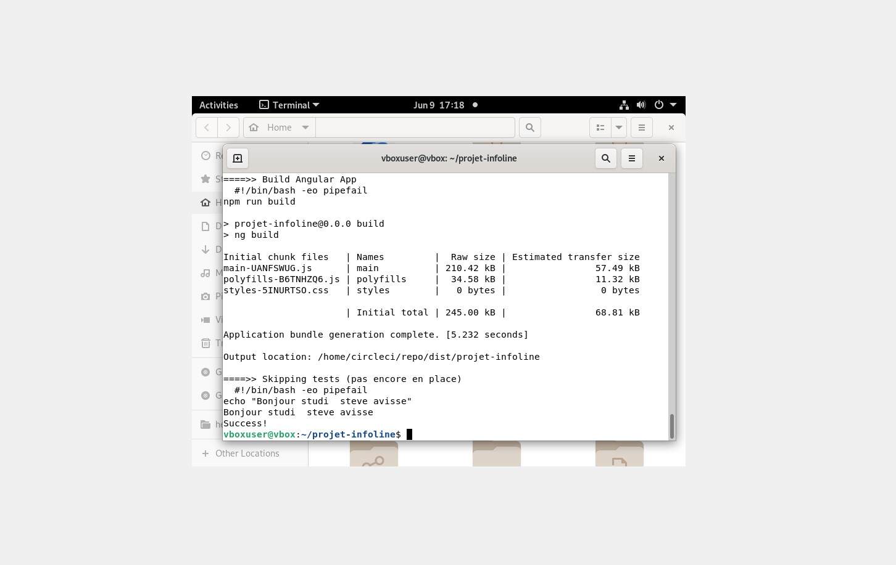
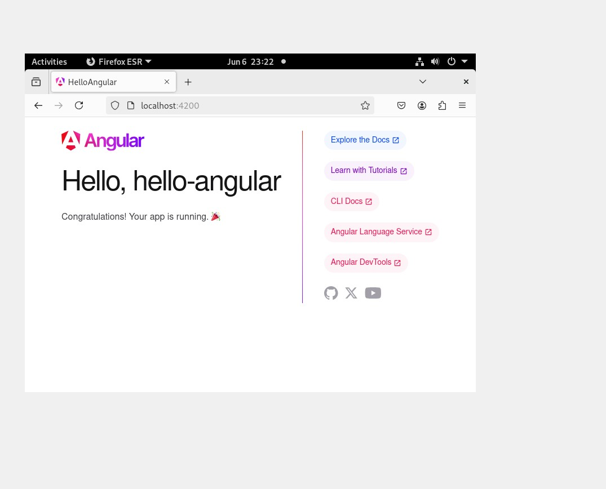
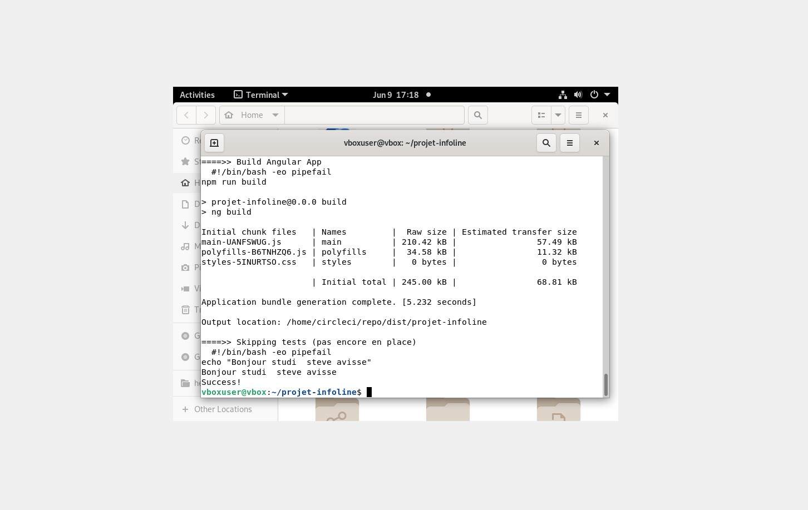
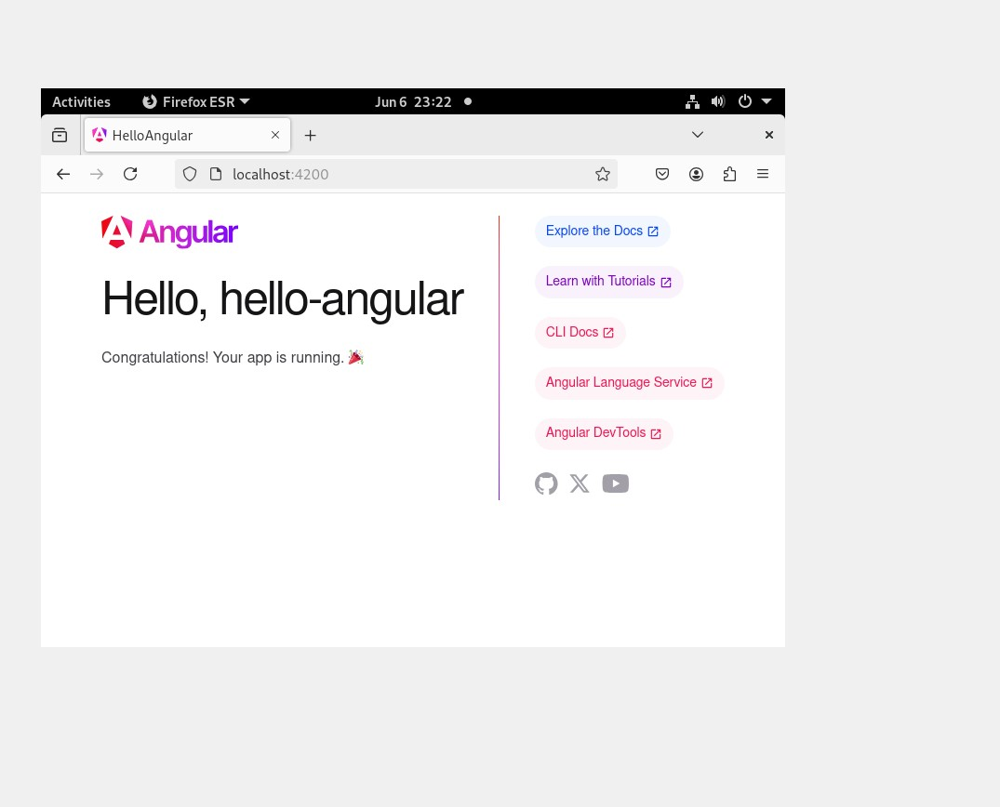

Automatisation Spring Boot → Docker → Kubernetes (Minikube) + Angular
 





Chaîne Dev→Ops 100% locale
Mise en place d’une API Spring Boot, packagée en Docker, déployée sur Kubernetes (Minikube), et vérifiée via un mini front Angular. Un job CircleCI est exécuté en local pour illustrer la CI.
- Catégorie : Dev / DevOps
- Contexte : VM Debian (VirtualBox), zéro cloud
- Livrables : code Java,
Dockerfile, manifests K8s, projet Angular, CI
Objectif pédagogique : démontrer une chaîne de bout en bout — développement, packaging, déploiement et exécution — en environnement local, reproductible et documenté. Contraintes : versions cohérentes (Java/Node), ressources Minikube, et CI locale utilisable sur n’importe quelle machine.
Backend : Spring Boot (endpoint /hello)
Packaging : Docker (multi-stage → image finale légère)
Orchestration : Kubernetes (Minikube) – Deployment + Service (NodePort)
Frontend : Angular (Hello Angular) pour valider la couche UI
CI : CircleCI exécutée en local (build Angular)3.1 Code Spring Boot (extrait)
@RestController
public class HelloController {
@GetMapping("/hello")
public String hello() { return "Hello, World!"; }
}3.2 Build Maven
mvn clean package -DskipTests3.3 Image Docker multi-stage
FROM maven:3.9.6-eclipse-temurin-17 AS build
WORKDIR /app
COPY . .
RUN mvn clean package -DskipTests
FROM eclipse-temurin:17-jdk
WORKDIR /app
COPY --from=build /app/target/*.jar app.jar
EXPOSE 8080
ENTRYPOINT ["java","-jar","app.jar"]docker build -t helloworld-app .
docker run -p 8080:8080 helloworld-app
# Test → http://localhost:8080/hello3.4 Minikube (image locale)
minikube start --memory=4096mb
minikube image load helloworld-app3.5 Manifests K8s
apiVersion: apps/v1
kind: Deployment
metadata: { name: helloworld-deployment }
spec:
replicas: 1
selector: { matchLabels: { app: helloworld } }
template:
metadata: { labels: { app: helloworld } }
spec:
containers:
- name: helloworld
image: helloworld-app
imagePullPolicy: Never
ports: [{ containerPort: 8080 }]apiVersion: v1
kind: Service
metadata: { name: helloworld-service }
spec:
type: NodePort
selector: { app: helloworld }
ports:
- protocol: TCP
port: 8080
targetPort: 8080
nodePort: 30080kubectl apply -f deployment.yaml
kubectl apply -f service.yaml
minikube service helloworld-service --url
# Exemple : http://192.168.49.2:30080#!/usr/bin/env bash
set -e
mvn clean package -DskipTests
docker build -t helloworld-app .
minikube start --memory=4096mb
minikube image load helloworld-app
kubectl apply -f deployment.yaml
kubectl apply -f service.yaml
kubectl wait --for=condition=ready pod -l app=helloworld --timeout=120s
URL=$(minikube service helloworld-service --url)
echo "App OK -> $URL"
curl -s $URL/helloUne seule commande pour rejouer l’ensemble de la chaîne.
# Node 20+
npx @angular/cli@latest new hello-angular
cd hello-angular
npm start
# http://localhost:4200But : vérifier l’outillage UI (CLI, dépendances) et prouver la maîtrise de la couche Front.
version: 2.1
jobs:
build-and-test:
docker:
- image: cimg/node:20.19.1
steps:
- checkout
- run: npm ci
- run: npm run build
- run: echo "Bonjour studi — Steve Avisse"
workflows:
build:
jobs: [build-and-test]# Nouvelle syntaxe CLI locale
circleci local execute build-and-test- Alignement de version Node :
cimg/node:20.19.1. - VM agrandie (disque/RAM) pour les builds.
- Commande CLI mise à jour (plus de
--job).
kubectl delete -f service.yaml
kubectl delete -f deployment.yaml
minikube stop && minikube delete- Résultat : image stable, pods Ready, service exposé, Angular OK, CI locale validée.
- REX : surveiller
JAVA_HOME, droits Docker (groupe), cohérence des versions Node/Angular.